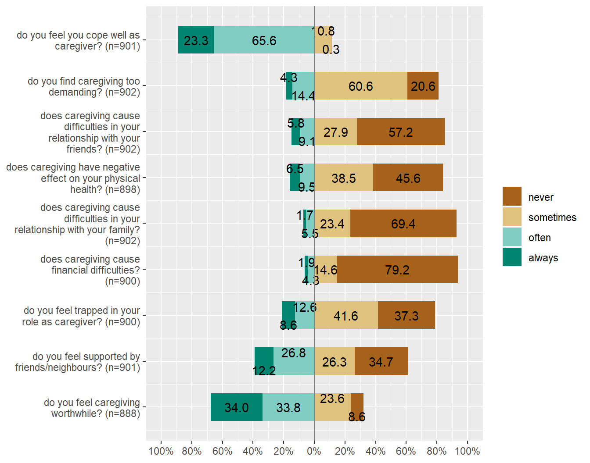
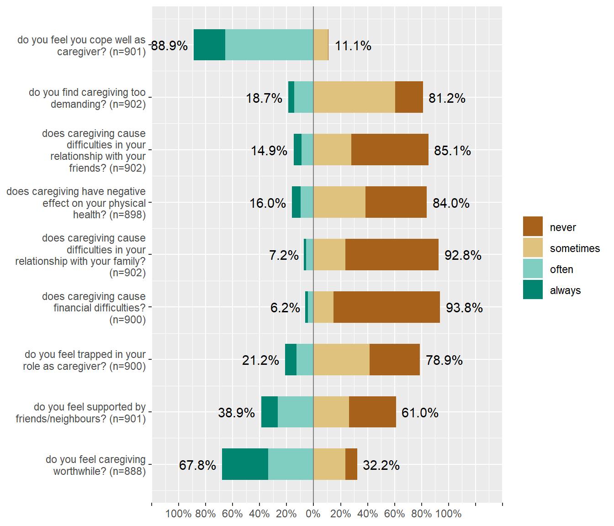
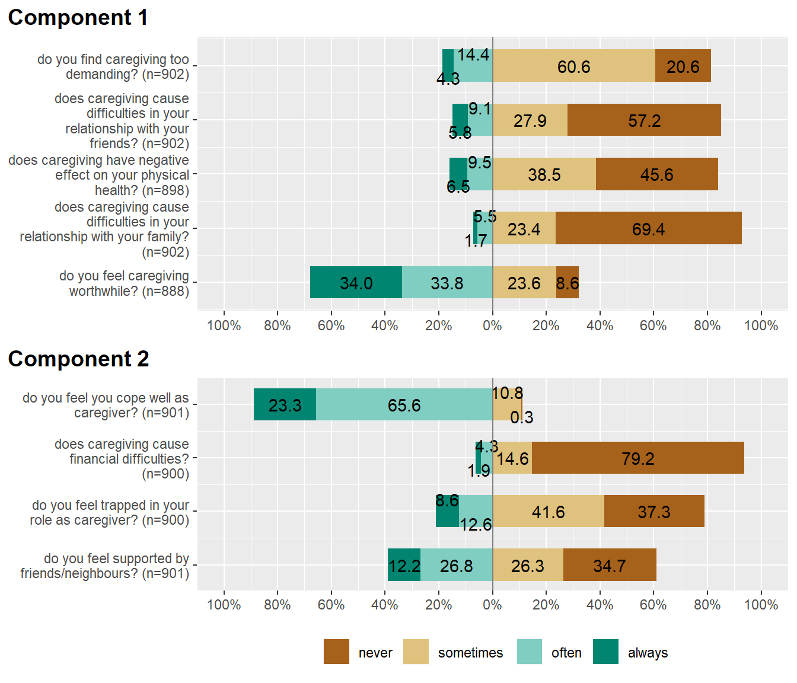
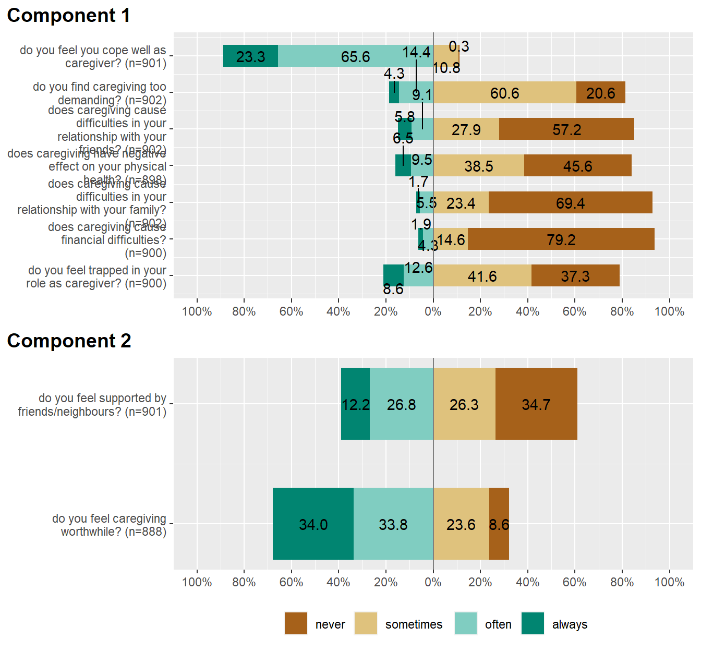
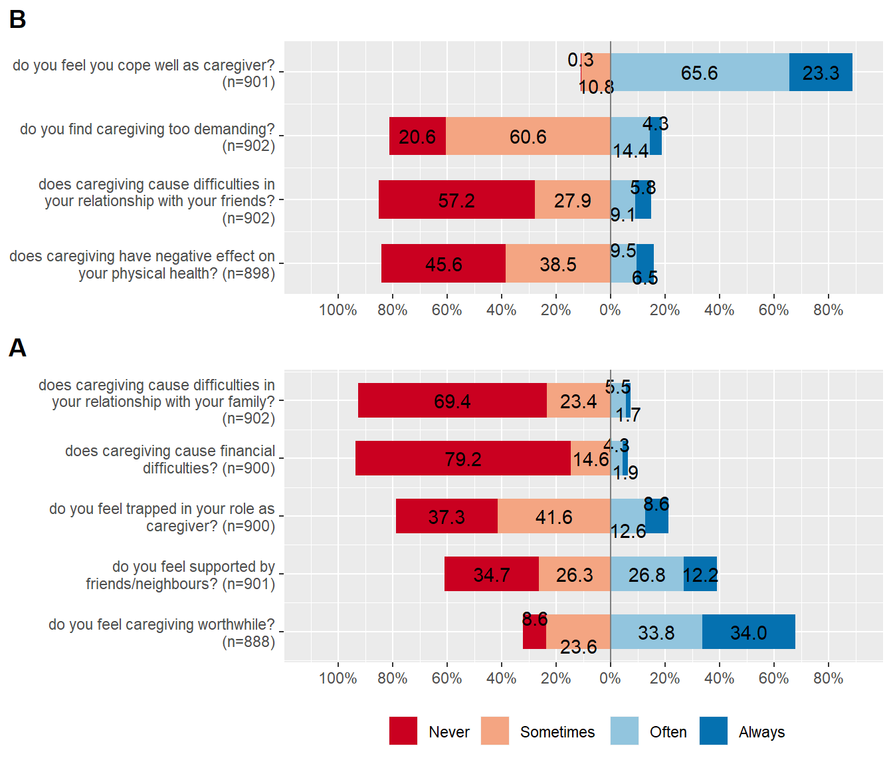
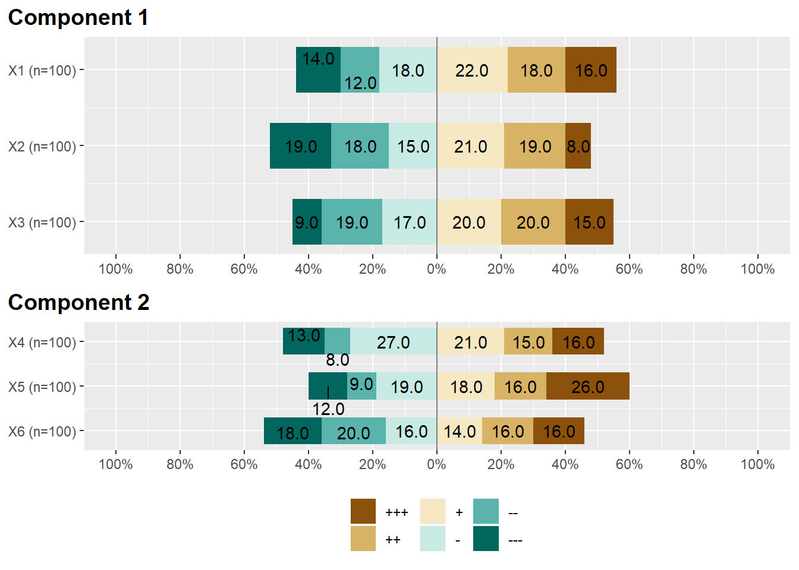

Plotting Likert Scales
Daniel Lüdecke
2020-05-28
Source:vignettes/plot_likert_scales.Rmd
plot_likert_scales.Rmdlibrary(dplyr) library(sjPlot) library(sjmisc) library(parameters) data(efc) # find all variables from COPE-Index, which all have a "cop" in their # variable name, and then plot that subset as likert-plot mydf <- find_var(efc, pattern = "cop", out = "df") plot_likert(mydf)

plot_likert( mydf, grid.range = c(1.2, 1.4), expand.grid = FALSE, values = "sum.outside", show.prc.sign = TRUE )

# Plot in groups plot_likert(mydf, groups = c(2, 1, 1, 1, 1, 2, 2, 2, 1))

pca <- parameters::principal_components(mydf) groups <- parameters::closest_component(pca) plot_likert(mydf, groups = groups)

plot_likert( mydf, c(rep("B", 4), rep("A", 5)), sort.groups = FALSE, grid.range = c(0.9, 1.1), geom.colors = "RdBu", rel_heights = c(6, 8), wrap.labels = 40, reverse.scale = TRUE )

# control legend items six_cat_example = data.frame( matrix(sample(1:6, 600, replace = TRUE), ncol = 6) ) six_cat_example <- six_cat_example %>% dplyr::mutate_all( ~ ordered(., labels = c("+++", "++", "+", "-", "--", "---"))) # Old default plot_likert( six_cat_example, groups = c(1, 1, 1, 2, 2, 2), group.legend.options = list(nrow = 2, byrow = FALSE) )

# New default plot_likert(six_cat_example, groups = c(1, 1, 1, 2, 2, 2))